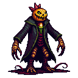
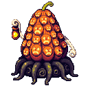
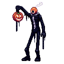
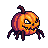
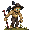

The Hollow Harvest
A third Yard raid, on the Ice Man's template: the same horn, warning, waves, last stand, pay and Yard lock-down. What's new is who comes (something far worse than the Pumpkin King), what the Yard turns into (dark, rotting, with things watching from the trees) and his one special move. Three bosses below, each with its own special; pick one, or mix a body from one with a move from another.
The three bosses
All three are what the Pumpkin King becomes when the harvest goes wrong. Concept art is PixelLab, first drafts: the chosen one gets proper frames (walk, attack, special) and his own boss pet, like every boss.

A gaunt scarecrow in a rotting coat and a crown of thorns, his pumpkin head split open like a jaw, full of needle teeth, a sick green candle inside. Root-arms, long claws. He doesn't walk so much as get closer every time you look away.
Every 20 to 30 s he snuffs the Yard: everything goes black except the four braziers round the court and a small glow round each player. In the dark you build Dread, and full Dread Hollows you for 3 s (you freeze, like the Ice Man's frost). He only takes full damage standing in light, so the job is to keep the braziers burning (hand in logs, like the Flood's sandbags) and drag him into them.

A bloated, rotting gourd the size of a cottage, covered in a dozen carved faces that all look different ways, carried on a nest of black vines. One long pale arm holds a lantern out in front of her, the way you'd hold out food.
She plants a seed in someone: a pumpkin starts growing on their head, with a 8 s countdown over it. If nobody carves it off (click the player), it bursts into Gourdlings all round them. Everyone else has to save each other, and it gets faster as she weakens. Every face on her that's still lit is a part to break: smash them all and she's open to a big hit.

Tall, thin and headless, smoke curling out of an empty collar. He carries his own head on a chain, and it is smiling far too wide. It laughs when he's hit. Sometimes it laughs when he isn't.
He throws his head into the Yard and it hides among a crop of identical jack-o'-lanterns. While the head's off, his body can't be hurt and keeps walking. Find the real one (its eyes follow you; the fakes burst into crows when hit) and he drops, stunned, for a free 10 s. A hunt for the whole server every 45 s.
The Yard goes dark (live demo)
This is a real frame of the Yard from the dev game, with the raid's look painted over it the way the game would: a night layer, light only where something burns, fog rolling in off the river, eyes in the trees, the grass rotting. Click through the phases.
Bottom row: which boss stands in the court. Motion stops for anyone with reduced motion on.
His harvest: the waves
In place of the Ice Man's wolves, yetis and raiders. Same wave sizes and timing (every 2 minutes, more with more people).

Gourdling: small, fast, comes in swarms
Hollow Scarecrow: the middle weight; crows peck whoever it's fighting Wax Wraith: floats through fences; snuffs your glow on hit (first draft, too cute: redraw)What's templated from the Ice Man
Everything below is the Ice Man's own numbers today; the new raid would start from them.
| Part | The Ice Man | The Hollow Harvest |
|---|---|---|
| Called by | the War Horn (Store), 5+ online, 3 h between raids | the same horn, a choice on it, or its own horn; shares the 3 h gap |
| Warning | 5 min, CASINO counts down at 4, 3, 2, 1 min and 30 s | the same, with the Yard darkening at each count |
| Lasts | 20 min | 20 min |
| Waves | every 2 min: 4 + 2 per player (cap 12), wolves, yetis, raiders | the same sizes: Gourdlings, Scarecrows, Wax Wraiths |
| Boss health | 4,000 + 1,200 a player (cap 40,000) | the same |
| Last stand | at 30%: 10 elites | at 30%: the last stand look, faster special |
| Special | Freeze: every 10 to 15 s, players in range frozen 3.5 s | A, B or C above |
| Pay | 20,000 + 3,000 a player, shared by damage, 400 floor | the same, plus the boss pet roll |
| Shuts | Bom's counter, the cash-out, the egg trade, the Exchange, the Long Night shop | the same |
| Lost | the Yard frozen over, stalls shut 20 min | the Yard dark and overgrown 20 min, stalls shut |
CASINO's lines
Narrated like the Ice Man and the Flood, the way the raids that worked best were.
🎃 The lamps in the Yard just flickered. All of them. At once. Five minutes.
🕯️ The forge has gone cold. Somebody check on Bronny. Four minutes.
🌑 There's no moon tonight. There was one a minute ago. Two minutes.
👁️ Something in the trees is smiling. Thirty seconds.
🎃 THE HOLLOW KING HAS COME FOR THE HARVEST. Keep the braziers lit. Stay together. Stay in the light.
🌑 The lights are out. He's closer than he was.
🔥 thrilltest landed the last blow: THE HOLLOW KING IS ASHES, and the lamps come back on, one by one. 9 of you held the dark back.
To decide
Nothing here is built. Next step after your pick: the boss and monster sprites with their frames, the overlay in the game, the special on the server (raid.js), a test like the Flood's, then dev.